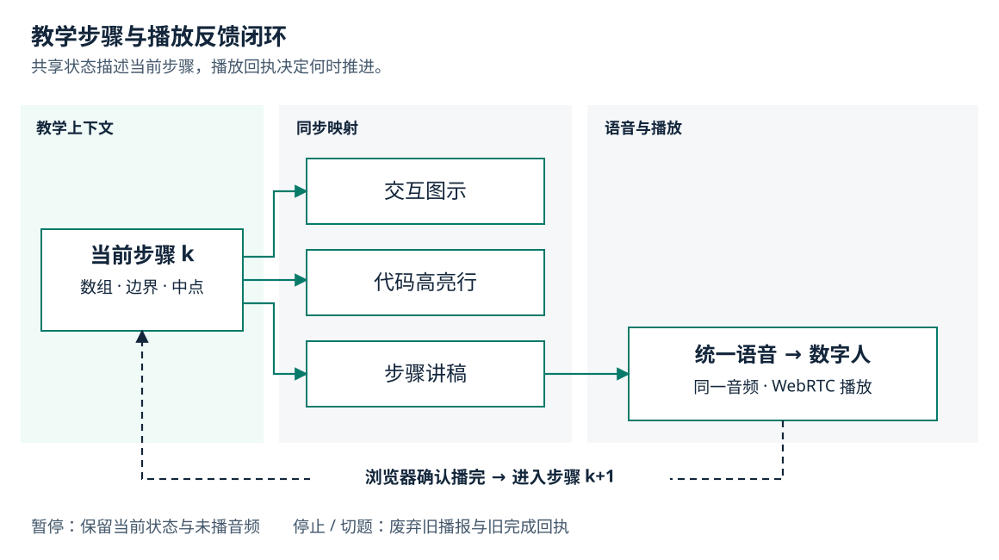

专题映射教学演示
题目对应具体演示状态与步骤讲稿，演示预设教学算法。
按专题选择题目，点击完整讲解。交互图示、同步代码与数字人进入同一个学习场景，连续解释后续步骤。
题目对应具体演示状态与步骤讲稿，演示预设教学算法。
算法内容送入与课堂共用的语音网关和数字人播放链路。
推进步骤时，图示与当前代码高亮共同更新，数字人解释这一步发生的比较、交换或边界变化。
数组、边界、代码行与讲稿从同一个步骤状态映射。
完整讲解收到媒体播放完成确认后，再进入下一步。
暂停保留当前讲解进度，继续后接着播放；完整讲解仍保持连续模式，无需重新开启后续步骤。
暂停当前媒体输出，保留尚未播放的音频与当前步骤。
完整讲解模式与临时播放状态分开保存，恢复后继续推进。
结合当前代码与高亮行提出问题，数字人针对具体操作解释原因，回答仍使用同一语音播放链路。
问题请求包含当前代码、行号与学生问题，减少泛化回答。
前一响应取消或结束后再发起新回答，避免实时响应互相占用。
选择教师音色与讲解语气，课堂和算法实验室共用设置。切换音色前停止讲解，新语气用于后续回答。
音色变更重建实时语音连接，避免同一次播报中途换声。
固定步骤讲稿保留原文；问答生成使用选择的讲解语气。

从状态 k 同时映射数组与边界、代码高亮行和讲稿，避免各自维护进度。
完整讲解等待浏览器媒体完成回执；模型生成结束不等于学生听完。
暂停保留未播音频与完整讲解模式；停止或切题后，旧播报及迟到回执失效。
图示、代码和讲解分别计时，容易出现讲解与当前画面不一致。
步骤 k 同时提供数组或图结构、代码行与讲稿；完整讲解收到媒体完成回执后再推进到 k+1。
可视状态与口播围绕同一次操作，避免按固定时长猜测。
暂停后只恢复当前句，会丢失后续步骤的连续讲解意图。
保留完整讲解模式、当前步骤及未播音频；继续只恢复播放，停止或切题才使旧播报失效。
恢复后仍继续后续步骤，旧完成回执不推动新题目。
新问题缺少代码位置会泛化回答，前一响应未结束又会占用实时连接。
提问携带当前代码、行号和问题；协调前一响应的取消或结束，再按序发起新的语音回答。
回答指向具体代码操作，减少重复生成与响应冲突。